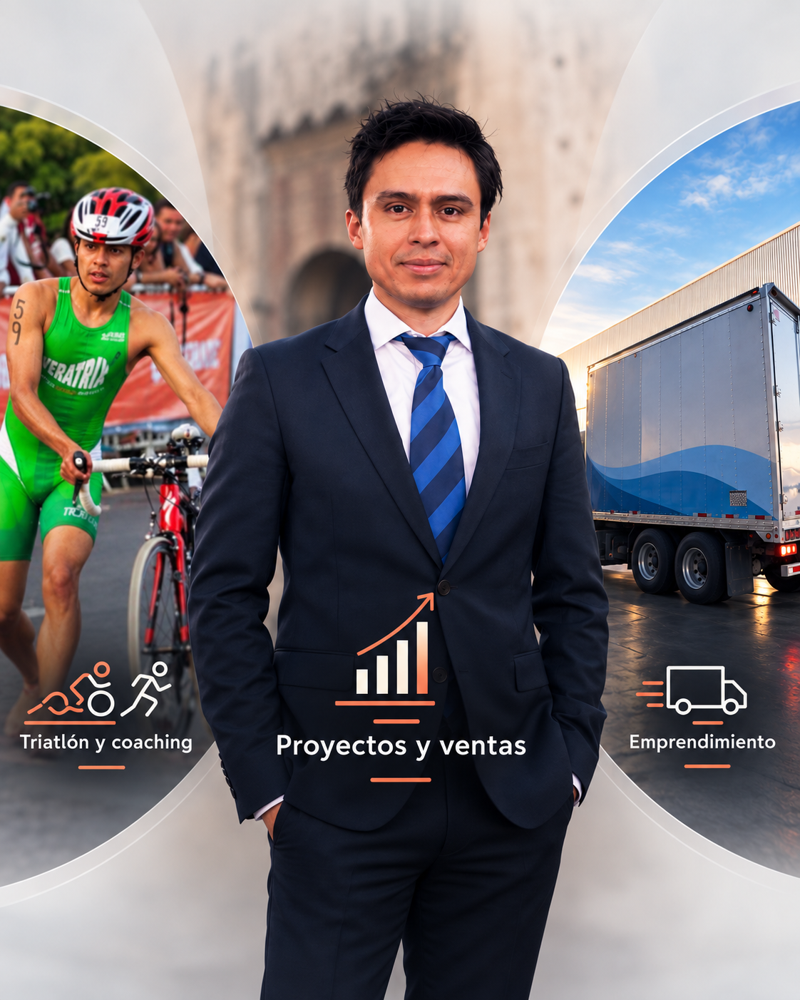

Experiencia laboral
Implementación de ERP, WMS, CRM y diferentes sistemas; gestión de proyectos tecnológicos y ventas consultivas de soluciones SaaS, IA aplicada y agentes de IA.
Explorar experiencia →PROJECT & SALES MANAGER · TRIATLETA · EMPRENDEDOR
Mi misión conecta transformación tecnológica, alto rendimiento y operación empresarial.

TRES FACETAS, UNA MISMA FORMA DE TRABAJAR
Implementación de ERP, WMS, CRM y diferentes sistemas; gestión de proyectos tecnológicos y ventas consultivas de soluciones SaaS, IA aplicada y agentes de IA.
Explorar experiencia →Más de una década construyendo rendimiento desde la constancia, los datos y una planificación individualizada. También acompaño a atletas a cumplir sus objetivos.
Explorar triatlón →Operación de una empresa de transporte: flota, logística, mantenimiento, servicio B2B y toma de decisiones con impacto real en costos y operación.
Explorar negocio →EXPERIENCIA LABORAL
PROPÓSITO
Me interesa estar donde la tecnología deja de ser una promesa y se convierte en valor real, crecimiento y mejores decisiones.
IMPLEMENTACIÓN
Gestión de alcance, procesos, usuarios, adopción y seguimiento de proyectos tecnológicos.
PROJECT MANAGEMENT
Traducción de necesidades de negocio en acciones, entregables y resultados medibles.
SAAS E INTELIGENCIA ARTIFICIAL
Desarrollo comercial de software, IA aplicada y agentes de IA orientados a resolver problemas reales.
ATLETA
Triatlones de todas las distancias. Maratones & ultramaratones. Eventos de resistencia y de natación.
ENTRENADOR
Diagnóstico, planificación, seguimiento y ajustes para acompañar al atleta desde su contexto real hasta su objetivo.
EMPRENDIMIENTO
Gestionar un negocio de transporte significa tomar decisiones todos los días: rutas, mantenimiento, disponibilidad de unidades, clientes, costos y continuidad operativa.
Esta faceta complementa mi experiencia tecnológica porque me permite vivir de primera mano los problemas que después buscamos resolver con procesos, datos y tecnología.
CONTACTO
Tecnología, coaching, alianzas o negocios. Si alguno de estos mundos conecta contigo, hablemos.